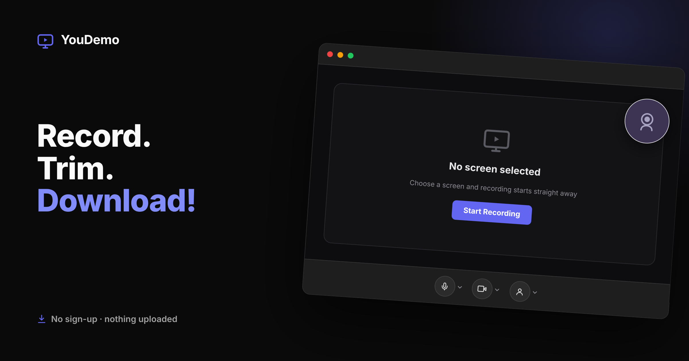

YouDemo
A browser-only screen and webcam recorder, deployable straight to GitHub Pages. No backend, no SSR, no routing library, just record, edit and download.
Browser-onlyNo backendStatic hosting
Sixteen years shaping data-heavy B2B SaaS. I'm at my best on 0→1 products where AI, data and real workflows meet, and I'm just as happy writing the query or the spec as setting the strategy.
I keep vision, strategy and the everyday features joined up as one story, so everything we build traces back to why it exists.
I test ideas honestly before we commit, plan in horizons rather than dates, and judge the work by the outcomes it creates, not the output it ships.
From search and content at Ask.com, through programmatic advertising at a WPP company, to leading product at Acorn-i. Two of the businesses I helped build were acquired.
Download CVFirst product hire into a services business with ambitions to build SaaS. Took Ignite from an internal tool to a licensed platform used by 250+ brands, 15+ agencies and 1,200 users, and took Texana from proof-of-concept to a shipped agentic GenAI product.
Promoted to lead the Vendor Integrations portfolio: three platforms handling terabytes of ad impressions, clicks and attribution data daily across GroupM’s agency network.
Joined after the GroupM acquisition to rebuild data ingestion for a global media group. Owned the Vendor Integration Engine, connecting 12+ AdTech platforms, and contributed to Proteus.
Part of the SEO Centre of Excellence across Ask.com and About.com, turning Google algorithm changes into concrete recommendations.
Supported a pivot into SEO-driven content, helping build sites that hosted 1.5M+ Q&A pairs generated from query log data.
Year-long industrial placement during my degree. Built client sites and got my first taste of ad trafficking.
A dual honours degree split evenly between computing and management, with a year in industry. For my final-year project I built a project planning and reporting application that generated Gantt charts in SVG.
View courseI love talking product: turning a vision into a strategy, and a strategy into features people actually use. AI is changing the role fast, and I'm fascinated by what that means for how we build. If that's on your mind too, I'd love to hear from you.